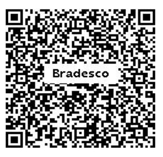

Esta página publica periódicamente la información financiera de la campaña solidaria realizada por Kim Music Project y KIM Software Solutions para apoyar iniciativas humanitarias destinadas a Venezuela.
Esta página publica periodicamente as informações financeiras da campanha solidária realizada pelo Kim Music Project e KIM Software Solutions para apoiar iniciativas humanitárias destinadas à Venezuela.
This page periodically publishes the financial information of the solidarity campaign carried out by Kim Music Project and KIM Software Solutions to support humanitarian initiatives for Venezuela.
Algunas personas solicitaron una opción más sencilla para colaborar desde Brasil. El PIX es completamente opcional y será tratado con la misma transparencia que las ventas de Bandcamp.
Algumas pessoas solicitaram uma forma mais simples de colaborar a partir do Brasil. O PIX é totalmente opcional e será tratado com a mesma transparência das vendas do Bandcamp.
Some people requested an easier way to contribute from Brazil. PIX is entirely optional and will be handled with the same transparency as Bandcamp sales.

Escanea el código QR o utiliza la clave PIX:
Escaneie o QR ou utilize a chave PIX:
Scan the QR code or use the PIX key:
Beneficiário / Beneficiary
Kimmel Williams Rondon Hernandez
Importante: las contribuciones por PIX pueden aparecer vinculadas al nombre personal del responsable de la campaña, ya que la clave PIX pertenece a una cuenta bancaria personal utilizada para administrar esta iniciativa solidaria. Todos los ingresos recibidos mediante PIX serán publicados y registrados en esta página de transparencia.
Importante: as contribuições via PIX podem aparecer vinculadas ao nome pessoal do responsável pela campanha, uma vez que a chave PIX pertence a uma conta bancária pessoal utilizada para administrar esta iniciativa solidária. Todos os valores recebidos via PIX serão publicados e registrados nesta página de transparência.
Important: PIX contributions may appear linked to the personal name of the campaign organizer, as the PIX key belongs to a personal bank account used to manage this solidarity initiative. All funds received through PIX will be publicly reported and recorded on this transparency page.
| Concepto | Conceito | Concept | Monto | Valor | Amount |
|---|---|---|---|---|---|
| Total recaudado por Bandcamp | Total arrecadado pelo Bandcamp | Total raised through Bandcamp | USD 0.00 | ||
| Total recibido por PIX | Total recebido por PIX | Total received through PIX | R$ 0.00 | ||
| Comisiones de plataforma / pagos | Taxas de plataforma / pagamentos | Platform / payment fees | USD 0.00 / R$ 0.00 | ||
| Total neto disponible para donar | Total líquido disponível para doação | Net total available for donation | USD 0.00 / R$ 0.00 | ||
| Total donado | Total doado | Total donated | USD 0.00 / R$ 0.00 |
Todavía no se ha realizado la primera donación.
A primeira doação ainda não foi realizada.
The first donation has not been made yet.
Los comprobantes de ventas, PIX y donaciones aparecerán aquí conforme la campaña avance.
Os comprovantes de vendas, PIX e doações aparecerão aqui conforme a campanha avançar.
Sales, PIX, and donation receipts will appear here as the campaign progresses.
Primer reporte: pendiente.
Primeiro relatório: pendente.
First report: pending.
Esta iniciativa no representa a ningún organismo oficial. Es una campaña independiente. Los ingresos netos recibidos por Bandcamp y PIX serán reportados en esta página.
Esta iniciativa não representa nenhum órgão oficial. É uma campanha independente. A receita líquida recebida por Bandcamp e PIX será informada nesta página.
This initiative does not represent any official institution. It is an independent campaign. Net proceeds received through Bandcamp and PIX will be reported on this page.